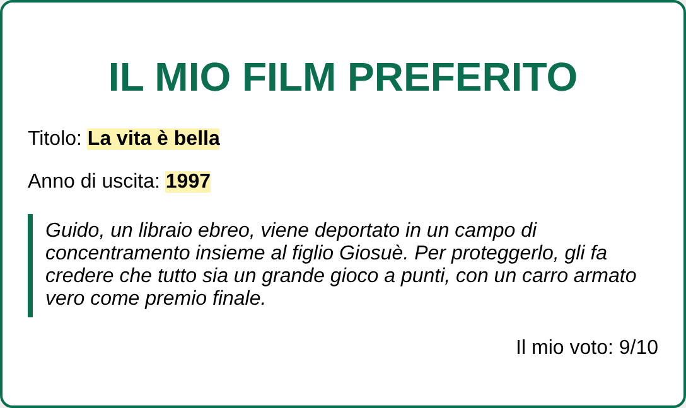
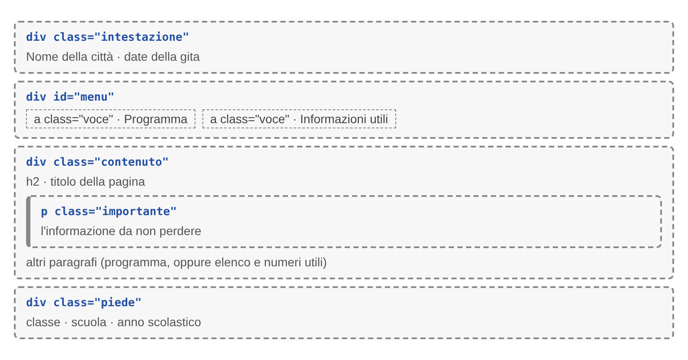
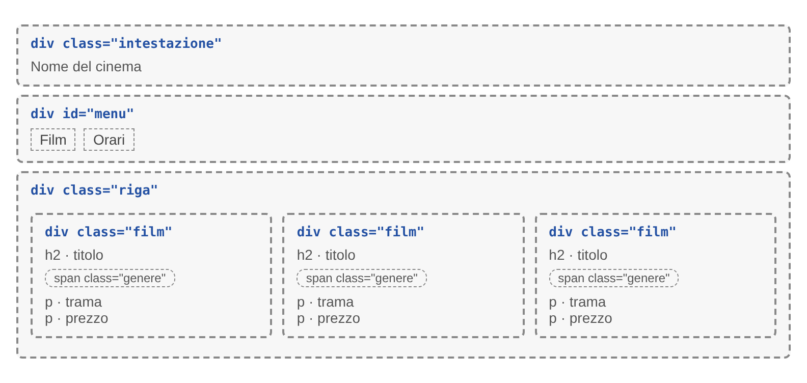
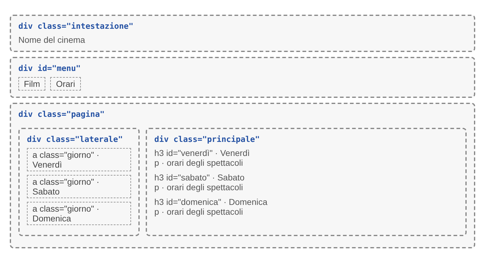
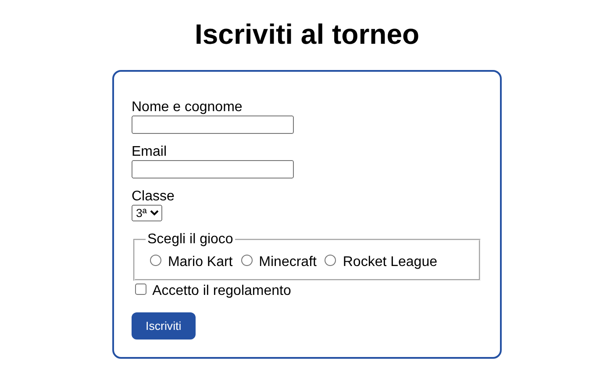

Sei esercizi in due gruppi, dal più guidato al più autonomo: prima lo stile e il layout delle pagine, poi i form. L'ultimo è una prova generale, come la verifica.
Crea una cartella per esercizio:esercizio1/, esercizio2/… fino a esercizio6/. Dentro metti i file .html e la sottocartella css/ con style.css. Usa nomi in minuscolo, senza spazi né accenti.
Usa solo il prontuario, come accadrà in verifica: abituati a cercarci la sintassi invece di copiarla dagli esercizi vecchi.
Controlla nel browser dopo ogni regola che scrivi: se una regola non ha effetto, verifica cosa non funziona prima di andare avanti.
01 · CSS e layout
Tre esercizi sullo stile e sulla disposizione delle pagine
Livello base
Esercizio 1 – La scheda del film
Obiettivo: scrivere un foglio di stile esterno usando i tre tipi di selettore e il box model. In questo esercizio sono indicate le proprietà da usare; dal prossimo esercizio andranno cercate nel prontuario.
L'HTML è già pronto: copialo in esercizio1/index.html e cambia solo i testi segnaposto (titolo, anno, trama, voto) con i dati di un film vero. Non modificare tag, classi e id.
<!DOCTYPE html><htmllang="it"><head><metacharset="UTF-8"><title>Il mio film preferito</title><linkrel="stylesheet"href="css/style.css"></head><body><divclass="scheda"><h1id="titolo">Il mio film preferito</h1><p>Titolo: <spanclass="evidenzia">scrivi qui il titolo</span></p><p>Anno di uscita: <spanclass="evidenzia">0000</span></p><pclass="trama">Scrivi qui la trama in tre o quattro righe.</p><pclass="voto">Il mio voto: 9/10</p></div></body></html>
Dentro la cartella esercizio1, crea la sottocartella css e, al suo interno, il file style.css. È il foglio di stile che l'HTML richiama già con il tag <link>. In questo file scrivi una regola CSS per ognuno dei punti qui sotto: ogni punto indica il selettore da usare e l'aspetto che l'elemento deve avere.
body con sfondo grigio chiaro e un font-family a tua scelta.
p: tutti i paragrafi con font-size di 16px.
#titolo centrato, in maiuscolo con text-transform, di un colore a scelta.
.scheda larga al massimo 500px, centrata nella pagina, con sfondo bianco, padding di 20px, un bordo di 2px e angoli arrotondati.
.evidenzia (è la classe degli span) in grassetto, con uno sfondo giallo chiaro.
.trama in corsivo, con un bordo solo a sinistra (border-left) e un po' di padding.
.voto allineata a destra.
Nel file css, sopra ogni regola, scrivi un commento che dice se il suo selettore è di tipo, di classe o di id (es. /* selettore di classe */).
Anteprima

Ecco come può apparire la scheda finita. Colori e caratteri possono essere diversi: conta che ogni regola produca l'effetto richiesto.
Prova e osserva
Rispondi con un commento in fondo al CSS:
porta il padding di .scheda a 60px e guarda il risultato; poi rimettilo a 20px e porta invece il margin a 60px. Che differenza vedi?
aggiungi p { color: green; } e .voto { color: red; }: di che colore è il voto, e perché?
Livello intermedio
Esercizio 2 – Il sito della gita (pagina a blocchi)
Obiettivo: scrivere da zero due pagine che condividono lo stesso foglio di stile e lo stesso menu.
Crea in esercizio2/ le pagine index.html (Programma) e info.html (Informazioni utili) per una gita di classe in una città a tua scelta. Entrambe hanno, nell'ordine:
un'intestazione (div con classe intestazione) con il nome della città e le date della gita;
un menu (div con id menu) con due link: Programma, che porta a index.html, e Informazioni utili, che porta a info.html. Il menu è identico nelle due pagine; dai a ciascuno dei due link la classe voce;
il contenuto (div con classe contenuto), diverso nelle due pagine:
in index.html: un titolo h2 “Programma” e il programma giorno per giorno;
in info.html: un titolo h2 “Informazioni utili”, un elenco puntato di cose da portare e i numeri utili;
in tutte e due le pagine: un solo paragrafo, quello con l’informazione da non perdere (per esempio “Ritrovo alle 7:00 davanti alla scuola”), ha la classe importante;
un piè di pagina (div con classe piede), identico nelle due pagine, con un paragrafo che contiene la tua classe, il nome della scuola e l’anno scolastico.
Schema della pagina

Lo schema mostra come sono disposti e annidati i blocchi, con le loro classi e id. Colori e caratteri li scegli tu.
Il foglio di stile
Dentro la cartella esercizio2, crea la sottocartella css e, al suo interno, il file style.css. Collegalo a tutte e due le pagine con il tag <link>. In questo file scrivi una regola CSS per ognuno dei punti qui sotto: ogni punto indica il selettore da usare e l'aspetto che l'elemento deve avere. Le proprietà che servono cercale nel prontuario.
body: la pagina non ha spazi vuoti attorno ai bordi della finestra, ha uno sfondo chiaro e un tipo di carattere a tua scelta.
.intestazione: è una fascia colorata che occupa tutta la larghezza, con il testo bianco, centrato e ben distanziato dai bordi della fascia.
#menu: è una fascia più chiara dell’intestazione, con il testo centrato e abbastanza distanziato dai bordi della fascia.
.voce: le voci del menu stanno sulla stessa riga (display: inline-block;), sono in grassetto, hanno un colore intonato all’intestazione e sono distanziate l’una dall’altra.
.contenuto: ha dello spazio tutto intorno, così il testo non tocca i bordi della finestra.
.importante: il paragrafo importante ha uno sfondo giallo chiaro e una linea colorata spessa solo sul lato sinistro, e il testo non tocca né lo sfondo né la linea.
.piede: il piè di pagina è una fascia scura, di un colore diverso dall’intestazione, con il testo bianco, centrato e più piccolo del resto della pagina.
Nel file css, sopra ogni regola, scrivi un commento che dice se il suo selettore è di tipo, di classe o di id (es. /* selettore di classe */).
Tocco in più: in ogni pagina aggiungi al link della pagina corrente la classe attiva e dalle un colore diverso dalle altre voci. Un elemento può avere più classi: si scrivono nello stesso attributo class, separate da uno spazio, per esempio <a class="voce attiva" href="index.html">. Scrivi la regola .attivadopo quella di .voce e spiega in un commento perché l'ordine conta.
Prova e osserva: nella regola .voce sostituisci inline-block con block e guarda il menu. Che cosa cambia? Poi rimetti inline-block.
Livello avanzato
Esercizio 3 – Il cinema del quartiere (elementi affiancati)
Obiettivo: usare display: flex per mettere i blocchi uno accanto all'altro, prima in riga e poi con un menu laterale.
Parte A – esercizio3/index.html, i film della settimana
Intestazione e menu come nell'esercizio 2. Il menu ha due voci: Film, che porta a index.html, e Orari, che porta a orari.html. Sotto, un div con classe riga che contiene trediv con classe film. Il div con classe riga serve da contenitore: è a lui che darai la regola che mette i film uno accanto all'altro.
Ogni film è un div con classe film e contiene, nell’ordine:
un titolo <h2> con il nome del film;
un paragrafo con il genere (per esempio Commedia, Fantasy, Animazione), scritto dentro uno <span> con classe genere;
un paragrafo con una breve frase che riassume la trama;
un paragrafo con il prezzo del biglietto.

Schema della pagina dei film. Colori e caratteri li scegli tu: conta la struttura.
Parte B – esercizio3/orari.html, menu laterale
Stessa intestazione e stesso menu della Parte A. Sotto, un div con classe pagina, che fa da contenitore e contiene due div:
uno con classe laterale: è il menu dei giorni, con tre link, Venerdì, Sabato e Domenica. Ogni link ha la classe giorno e porta alla parte della pagina con gli orari di quel giorno (per esempio <a class="giorno" href="#venerdì">Venerdì</a>);
uno con classe principale: contiene gli orari dei tre giorni, uno sotto l'altro. Per ogni giorno scrivi un titolo <h3> con il nome del giorno e sotto gli spettacoli con il loro orario. Dai a ogni titolo l'id a cui punta il link corrispondente (per esempio <h3 id="venerdì">Venerdì</h3>): così, cliccando un giorno nel menu, la pagina salta ai suoi orari.

Schema della pagina degli orari. Colori e caratteri li scegli tu: conta la struttura.
Parte C – esercizio3/css/style.css, lo stile delle due pagine
Dentro la cartella esercizio3, crea la sottocartella css e, al suo interno, il file style.css. Collegalo a tutte e due le pagine (index.html e orari.html) con il tag <link>. Per intestazione e menu puoi riusare le regole dell'esercizio 2. Poi scrivi una regola CSS per ognuno dei punti qui sotto: ogni punto indica il selettore da usare e l'aspetto che l'elemento deve avere. Le proprietà che servono cercale nel prontuario.
body: la pagina ha uno sfondo di colore scuro.
.riga: i tre film stanno uno accanto all'altro, sulla stessa riga.
.film: ogni scheda è larga il 30%, ha sfondo bianco, un bordo e gli angoli arrotondati; il testo non tocca il bordo e le schede sono distanziate l'una dall'altra.
.genere: il genere sembra una piccola etichetta, con il testo bianco e piccolo su uno sfondo colorato, un po' di spazio attorno al testo e gli angoli arrotondati.
.pagina: il menu laterale e gli orari stanno uno accanto all'altro.
.laterale: è largo 180px, ha uno sfondo chiaro e il testo non tocca i bordi.
.giorno: i giorni stanno uno sotto l'altro, in grassetto e distanziati tra loro.
.principale: ha uno sfondo bianco e dello spazio tutto intorno, così gli orari non toccano il menu laterale; il testo non tocca i bordi dello sfondo.
Nel file css, sopra ogni regola, scrivi un commento che dice se il suo selettore è di tipo, di classe o di id (es. /* selettore di classe */).
Prova e osserva
nella regola .riga cancella la dichiarazione che mette le schede una accanto all'altra e guarda la pagina. Che cosa succede? Poi rimettila.
aggiungi un quarto film dentro la riga: le schede ci stanno ancora in una riga? Che cosa fa il browser con la larghezza del 30%?
Riepilogo
Autovalutazione – CSS e layout
Alla fine dei tre esercizi spunta quello che hai fatto davvero, poi riapri le pagine nel browser e controlla.
02 · Form
Tre esercizi sui moduli, fino alla prova generale
Conserva bene questi moduli: più avanti li riprenderemo per ricevere davvero i dati inviati e salvarli.
Livello base
Esercizio 4 – Il torneo di videogiochi
Obiettivo: scrivere un form semplice, collegando ogni etichetta al suo campo, e vedere quali dati invia. In questo esercizio sono indicati i controlli da usare; dal prossimo andranno scelti da te.
Crea esercizio4/index.html con la struttura HTML completa e un titolo <h1> “Iscriviti al torneo”. Sotto, un form con action="/torneo" e method="get" che contiene, nell'ordine:
Dato
Controllo
Regole
Nome e cognome
input di tipo text
obbligatorio
Email
input di tipo email
obbligatorio
Classe: 3ª, 4ª, 5ª
select con tre option
—
Gioco: Mario Kart, Minecraft, Rocket League
tre radio, dentro un fieldset con la legend “Scegli il gioco”
obbligatorio
Accetto il regolamento
checkbox
obbligatorio
Regole per l'HTML
ogni campo ha una label collegata con for e id, e un name;
i tre radio hanno lo stesso name; radio, option e checkbox hanno un value;
le etichette dei radio e della checkbox hanno la classe scelta;
in fondo, un pulsante Iscriviti che invia il form.
Lo stile
Dentro la cartella esercizio4, crea la sottocartella css e, al suo interno, il file style.css, e collegalo a index.html con il tag <link>. Scrivi una regola CSS per ognuno dei punti qui sotto:
form largo al massimo 400px (max-width), centrato nella pagina, con padding di 20px, un bordo e angoli arrotondati.
label: ogni etichetta sta sopra il suo campo (display: block), con un po' di spazio sopra (margin-top).
.scelta: le etichette dei radio e della checkbox restano accanto alla loro casella (display: inline).
button con sfondo colorato, testo bianco e angoli arrotondati.
Nel file css, sopra ogni regola, scrivi un commento che dice se il suo selettore è di tipo, di classe o di id (es. /* selettore di classe */).
Anteprima

Ecco come può apparire il form finito. Colori e caratteri possono essere diversi: conta che ogni regola produca l'effetto richiesto.
Prova e osserva
compila il form e invialo: nella barra degli indirizzi leggi le coppie name=valore. Ci sono tutti i dati?
togli il name al campo email e invia di nuovo: che cosa cambia nella barra degli indirizzi? Poi rimettilo.
prova a inviare il form senza scegliere il gioco: che cosa succede?
Livello intermedio
Esercizio 5 – Ordina la pizza (form completo)
Obiettivo: scegliere da solo il controllo giusto per ogni dato, far controllare i dati al browser e dare al form un aspetto ordinato.
Crea esercizio5/ordina.html per la pizzeria "Da Gino": un titolo <h1> e sotto un form con action="/ordine". Il form deve raccogliere i dati della tabella qui sotto. Il controllo da usare per ogni dato lo scegli tu.
Dato
Regole
Nome
obbligatorio
Telefono
obbligatorio, 10 cifre
Indirizzo di consegna
obbligatorio, almeno 5 caratteri
Pizza: Margherita, Diavola, Quattro formaggi, Ortolana
obbligatorio, una sola
Quantità
da 1 a 10
Impasto: classico, integrale, senza glutine
una sola scelta, obbligatoria
Aggiunte: bufala, olive, patatine
zero, una o più
Orario di consegna: 19:30, 20:00, 20:30, 21:00
una sola scelta
Note per il fattorino
al massimo 150 caratteri
Accetto le condizioni del servizio
obbligatorio
Regole per l'HTML
ogni campo ha label collegata con for e id, e un name; radio, checkbox e option hanno un value;
impasto e aggiunte stanno ciascuno in un fieldset con la sua legend;
un pulsante Ordina e uno Ricomincia.
Controllo dei dati. Metti per ora method="get", compila il form e invialo: nella barra degli indirizzi leggi le coppie name=valore. Ci sono tutti i dati? Il nome che hai scritto è quello giusto? Quando tutto torna, passa a method="post".
Lo stile
Dentro la cartella esercizio5, crea la sottocartella css e, al suo interno, il file style.css, e collegalo a ordina.html con il tag <link>. Questa volta i selettori li scegli tu: scrivi le regole che servono per ottenere l'aspetto descritto nei punti qui sotto e cerca le proprietà nel prontuario.
Il form è largo al massimo 420px, è centrato nella pagina, ha uno sfondo colorato e gli angoli arrotondati.
Le etichette dei campi stanno sopra il proprio campo.
Campi di testo, menu a tendina e area di testo sono tutti della stessa larghezza (attento: una regola scritta per tutti gli input vale anche per radio e checkbox; per colpire solo alcuni campi usa una classe).
Le etichette di radio e checkbox restano accanto alla propria casella.
Quando un campo è selezionato, il suo bordo cambia colore.
Quando un campo contiene un dato non valido, dopo che l'utente l'ha toccato, il bordo diventa rosso.
I due pulsanti hanno colori diversi, e il colore cambia quando ci passa sopra il mouse.
Nel file css, sopra ogni regola, scrivi un commento che dice se il suo selettore è di tipo, di classe o di id, e se usa una pseudo-classe (es. /* selettore di tipo con pseudo-classe */).
Prova e osserva: prova a inviare il form vuoto, con un telefono di 9 cifre e con 12 pizze. Quali messaggi compaiono?
Riepilogo
Esercizio 6 – Prova generale: il museo di scienze
Obiettivo: fare tutto da solo, come alla verifica, usando solo il prontuario.
Parte 1 – Home. In esercizio6/index.html: intestazione con il nome del museo, menu con Home e Prenota una visita, tre schede affiancate (Le sale, I laboratori, Orari e biglietti) e piè di pagina. Crea il file esercizio6/css/style.css e collegalo a tutte e due le pagine. Nel CSS le tre schede stanno una accanto all'altra, con un bordo, gli angoli arrotondati e il testo distanziato dal bordo. Usa almeno un selettore di tipo, uno di classe e uno di id, e uno span con una classe per evidenziare un prezzo. Sopra ogni regola scrivi il commento con il tipo di selettore.
Parte 2 – Form. In esercizio6/prenota.html, con la stessa intestazione e lo stesso menu, un form con method="post" per prenotare una visita guidata per una classe:
scuola (obbligatoria) e email del docente (obbligatoria);
data della visita (obbligatoria) e numero di studenti, da 10 a 30;
percorso, da un menu: Dinosauri, Spazio, Corpo umano;
lingua della visita, una sola tra italiano e inglese, in un fieldset;
laboratori facoltativi, uno o più tra Fossili, Microscopio, Planetario, in un fieldset;
richieste particolari, al massimo 200 caratteri;
pulsanti di invio e reset.
Parte 3 – Stile del form. Il form è centrato e largo al massimo 420px, le etichette stanno sopra i campi e i campi hanno la stessa larghezza. Il campo selezionato ha il bordo colorato, i campi non validi hanno il bordo rosso dopo che l'utente li ha toccati, e i pulsanti cambiano colore quando ci passa sopra il mouse.
Parte 4 – Caccia all'errore. Copia questo codice in esercizio6/errori.html. Contiene 5 errori: correggili e spiega ognuno con un commento.
<!DOCTYPE html><htmllang="it"><head><metacharset="UTF-8"><title>Visita al museo</title><style>.riquadro {
max-width: 380pxmargin: 0 auto;
padding: 20px;
border: 2px solid #2451a3;
}
label {
display: block;
margin-top: 10px;
}
.bottone {
margin-top: 15px;
background-color: #2451a3;
color: #ffffff;
}
.bottone:hover {
background-color: #1b3d7a;
}
#avviso { color: blue; }
.nota { color: orange; }
</style></head><body><formclass="riquadro"action="/visita"method="pots"><labelfor="classe">Classe</label><inputtype="text"id="classe"name="classe"><labelfor="studenti">Numero di studenti</label><inputtype="number"id="studenti"min="10"max="30" required><fieldset><legend>Lingua della visita</legend><inputtype="radio"id="ita"name="lingua"value="italiano"><labelfor="ita">Italiano</label><inputtype="checkbox"id="eng"name="lingua"value="inglese"><labelfor="eng">Inglese</label></fieldset><buttonclass="botone"type="submit">Prenota</button></form><pid="avviso"class="nota">Di che colore sarà questo paragrafo?</p><!-- Di che colore è il paragrafo qui sopra? Perché, visto che .nota è scritta dopo? --></body></html>
Autovalutazione
Alla fine spunta quello che hai fatto davvero, poi riapri le pagine nel browser e controlla.